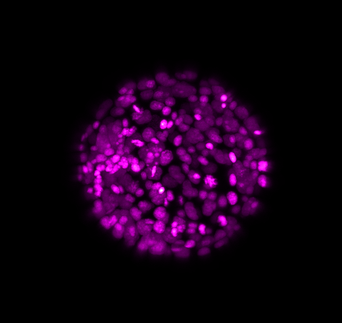
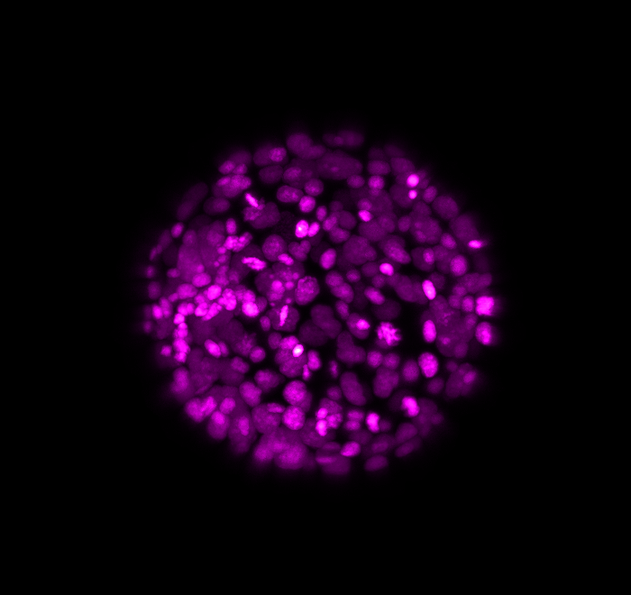

Volumetric Images of Platynereis¶
We demonstrate the results of our pipeline on the marine, annelid worm Platynereis dumerilii. We provide two sets of data, which can be downloaded by clicking this url <https://owncloud.mpi-cbg.de/index.php/s/BO8CTvW9qBvaePH>.
The directory 01_Insitus contains data for individual specimens at the developmental stage of 16 hpf (or hours post fertilization), which were fixed, stained for the expression of a particular gene and imaged through confocal microscopy. The DAPI channel, which localizes the cell nuclei, is made available in the sub-directory 01_Images.
The directory 02_Live contains several snapshots of one single specimen which was imaged as it developed over time, through Light Sheet Microscopy. The DAPI channel is made available for a few time points.
 

{kind=link}
Here above, one can see an exemplary in-situ specimen on the left and an exemplary time frame from the live embryo on the right. The process of chemical fixation leads to shrinking of the embryo, which is why the in-situ specimen appears shrunk, despite being of an equivalent stage.
In our project, we address two use-cases: Firstly, Intramodal registration where multiple in-situ specimens are registered to a reference in-situ specimen. For this, we chose to register all in-situ specimens to the specimen present in directory 01_insitus/01_Images/04 and called Pdu_Pax6MHT_16hpf_pNA_PB_20180504-9_dapi.tif. This implies that 11 images of in-situ specimens were registered to one typical, target in-situ specimen.
Secondly, Intermodal registration, where multiple in-situ specimens were registered to the corresponding frame from the time-lapse movie which contains an equivalent number of nuclei. This provides us with 7 comparisons. Please note that the sub-directories with the same name correspond to each other, for example, 01_insitus/01_Images/02 corresponds to 02_live/01_Images/02 and so on.
Annotated Landmarks¶
Since for real data the true correspondences are not known, we asked expert biologists to manually identify 12 corresponding landmark nuclei. This set represents ground truth landmarks against which we evaluated the results of our registration based on the average L2 euclidean distance of proposed landmark correspondences. These landmarks, for both the in-situ and live embryo are available in the sub-directories */03_landmarks/.


In the image above, one can see for example, the landmarks labeled 1, …, 12 in the source (green) image and labeled 1’, …, 12’ in the target (magenta) image for intramodal (left) and intermodal (right) use cases, prior to performing any registration.